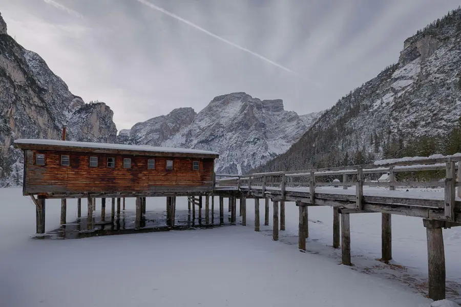

Estate
Benvenuto sul lato caldo: sabbia, acqua trasparente e giornate che non finiscono mai.
Due modi di girare una card: quattro foto che si voltano con il testo che galleggia sopra, e una carta a due stagioni con il bordo che corre. Passa il mouse, tocca o usa Tab.
Liguria
Case color pastello appese alla scogliera: si arriva a piedi, in treno o dal mare.
Giungla
Un’ora di sentiero tra le felci, poi il rumore si sente prima di vedere l’acqua.
Sahara
La sabbia cambia colore ogni mezz’ora: il momento migliore è subito prima del tramonto.
Kyoto
Cinque piani di legno e silenzio: all’alba, prima dei gruppi, si ha quasi tutto per sé.
Benvenuto sul lato caldo: sabbia, acqua trasparente e giornate che non finiscono mai.

Benvenuto sul lato freddo: aria tagliente, silenzio e un lago che sembra di vetro.
Le foto dei luoghi sono su due facce di un solo elemento, e il retro di ciascuna resta nascosto. Il testo sta più vicino all’occhio, per questo si muove di più della card quando gira. Foto: Unsplash.